EClass includes a simple WYSIWYG editor for creating and editing presentations. The editor allows paragraphs, lists, and images to be added, moved, removed, and edited. More advanced presentation editing should be done in an external HTML editor.
Figure 1 shows the editor with an empty document open. The toolbox includes the buttons for each of the elements supported by the editor.
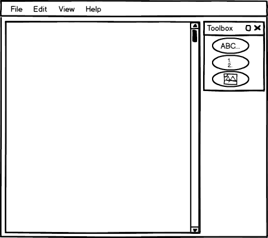
Figure 1: The editor with an empty document.
The adding process for paragraphs, lists, and images begins the same. First, the user selects the element he wishes to add from the Presentation Editor Toolbox. Then the user clicks on the document where he wishes the element to be inserted. At this point, the procedure differs for each tool.
Figure 2 shows the first two steps the user goes through to insert text. These steps are the same for every element a user wishes to add. First, the user selects (by clicking on) the element he wishes to add from the toolbox. Then the user clicks on the document where he wants the element to be added. Note: *click* is symbolic of the user clicking and is not displayed in the EClass application.
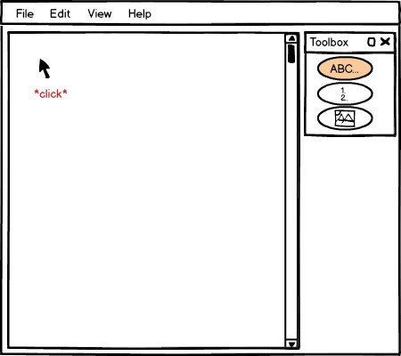
Figure 2: The first steps of the add process.
At this point, the appropriate add-element dialog is displayed for the user. This dialog is also the same dialog that appears when the user wishes to edit an existing element. Rather than the dialog containing the values of the existing element attributes as it does for editing elements, the dialog is empty when adding elements.
Figure 3 shows the add-text dialog.
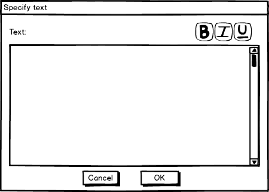
Figure 3: The empty add-text dialog displayed immediately after the user clicks.
The user specifies the text of the element in the text-box and then selects OK to complete the adding of text or cancel to cancel the adding of text.
All of the text the user enters into this field is html-encoded to be displayed as-is. Whitespace is preserved. In the Specify Text dialog there are three buttons in the top right, one for bold, italics, and underline. The user uses these buttons by first selecting the text to be bolded or unbolded, italicized or unitalicized, ... then pressing the button. EClass then changes the font-face of the text to reflect the user's actions.
Figure 4 includes a dialog mini-tale of a user adding text, selecting text, then bolding that text.
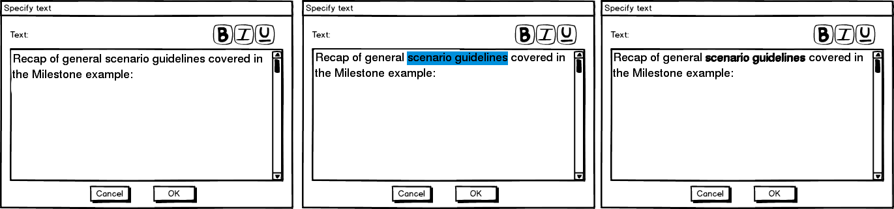
Figure 4: A user bolds text.
After the user has completed adding the text and the user presses OK, the text is displayed in the editor.
Notice that the text add button (ABC) is still selected. The button remains selected so many elements can be added consecutively. To deselect a button, the user must click on the same button again or select another button.
Figure 5 shows the completed add.
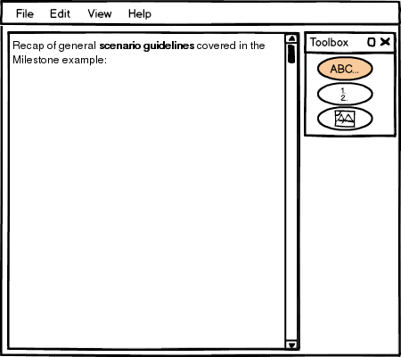
Figure 5: The user completed adding text.
Adding a list happens the same way except the list-edit dialog appears instead of the text-edit dialog.
In the list dialog, the user can specify the symbol type for list items using the drop down box. This drop down box determines which style of numbering/bullets should be displayed for the list. The options are alpha (A, B, C...), numeric (1, 2, 3...), roman-numeric (I, II, III...), solid dot, and hollow dot.
The user also specifies the list elements. The user may click on any row in the elements table and click the button Insert, Add, Remove, or Edit to change this elements in the list. Insert inserts a new list element before the selected element. Add adds a new list element after the selected element. Remove removes the selected element. Edit opens up the edit dialog for the selected list element. Finally, the user may reorder list elements by dragging and dropping list-elements around the table.
Once the user has completed adding elements to their list, the user presses OK or Cancel to save or disregard their changes, respectively. The same exact dialogs appear when re-editing lists, only the table is initialized with the list elements rather than intially displaying blank.
Figure 6 shows the initial list-edit dialog.
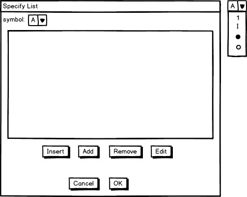
Figure 6: The initial list-edit dialog. Floating to the right: the full symbol drop down menu.
The Insert, Add, and Edit buttons all open the edit-list-element dialog, but how they get there is a bit different. The Insert and Add buttons create a new list element and add it before or after the currently selected list element, respectively. Then the Insert and Add buttons open the edit-list-element dialog where the list-element may be specified. The Edit button skips straight to the edit-list-element dialog, editing the currently selected list-element. The Add and Insert buttons open the edit-list-element dialog with blank fields, whereas the edit-list-element opens the dialog with the field values of the currently selected list filled in.
If the table is empty, only the Add button is enabled. Pressing the add button creates a new list-element as the first element in the list. Once an element exists in the list, all of the buttons are always enabled because a list-element is always active. If the user got to the list-edit dialog through editing instead of adding a list, the first element in the list is selected as the initial selection.
Figure 7 shows the Specify Element dialog for an Insert or Add command (blank).
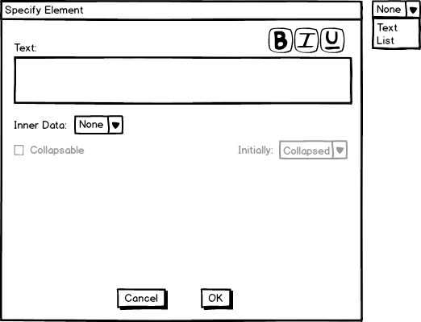
Figure 7: The initial Specify Element dialog for adding or inserting a new list-element.
The text box is a text box with the exact same functionality as the textbox for adding text to a presentation. However, this text box applies to the title-line of the list element. An entire paragraph can be displayed here, but generally a single non-wrapping line is displayed at the title-line. This is the line that displays directly beside the list-element's symbol. A list element also contains Inner Data. Inner data can be multiple paragraphs, a single line, or a sub-list. The inner data type is selected with the Inner Data drop-down box. If this list-element has inner-data, the inner-data of this list element can be specifed as collapsable or non-collapsable. Collapsable inner-data may be hidden and shown in a presentation. Non-collapsable data is always visible. Furthermore, The initial state of a collapsable list-element can be specified if there is inner-data. The collapsable list can start off either collapsed or expanded.
Figure 8 shows the different options of InnerData being selected. If the inner-data option is Text, a textbox identicle to the one above shows. If the option is List, a list table identical to the list table of the Specify List Dialog shows.
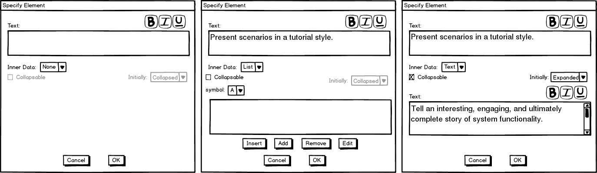
Figure 8: The different inner-data types consisting of none (left), list (middle), and text (right).
Notice that the list functionality is exactly the same as that of a normal list, only the list displayed above is a sub-list of a list displayed as inner-data of a list element.
When the user clicks OK or Cancel, he is returned to the Specify List dialog with his new list element added or not added, respectively. The list-element's title-line is displayed (or previewed if it is too long) and the user may now decide whether to submit the list, cancel editing or deleting the list, or change more list properties.
Figure 9 shows the initially blank list-element-table of the Specify List dialog now containing the rightmost list element from figure 8.
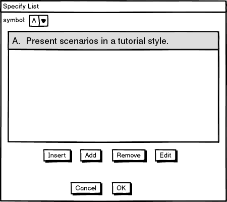
Figure 9: The Specify List dialog after the user adds a list-element.
Once the user is satisfied with their list, they confirm their changes by pressing OK.
Figure 10 shows the list from figure 9 added to the presentation.
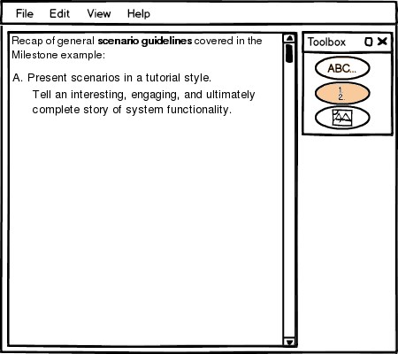
Figure 10: the presentation after the user adds the list.
Adding an image is exactly the same as adding a List and adding Text up to the point where the dialog box shows up. The dialog that shows up is a standard file-selector dialog. The user selects the image they wish to add to the presentation and then presses OK (or Open) to add the image to the presentation, or presses cancel to cancel adding.
Figure 11 shows an image added to the presentation.
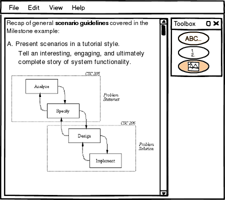
Figure 11: the presentation after the user adds an image.
The other options supported by the basic editor other than Add are Editing, Deleting, and Rearranging the editor-supported elements. Editing is done by double clicking anywhere on an existing element. When the user double-clicks on a element, the proper specify-dialog is displayed with the existing values filled in the fields. The user may edit and press OK to submit his changes, or press Cancel to cancel his changes.
Rearranging the order of elements is done through drag and drop. First, the user points his cursor over the element he wishes to reposition. Then the user presses and holds the left mouse button down. Then the user moves his cursor up or down until the element is at the desired position. As he drags his mouse up or down, the elements reorder themselves so he knows when he has dragged the element far enough. When he releases the mouse button, the element has finished being repositioned.
Figure 12 shows a mini-tale of a user repositioning the text element of the presentation in figure 11 below the image element.
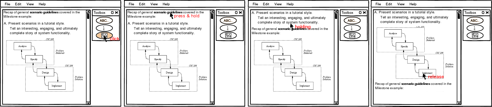
Figure 12: Reordering an element.
The user deselects the text-add button so text doesn't add when he clicks. Then the user moves his mouse over the text element and holds down the left mouse button. Finally, the user drags the text element below the image element and releases the mouse so the element is reordered to the bottom of the current list of elements.
Notice how the cursor is only half way below a non-dragged element before the element being dragged down swaps places with the element the cursor is over. Elements in the editor take a simple indexed ordering. Two elements may not be superimposed upon one another in the built-in editor.
Deleting an element from the presentation happens by first selecting the trashcan button from the toolbox, then clicking on an element. The element is removed from the presentation after it is clicked on
Figure 13 shows a mini-tale of deleting an element.
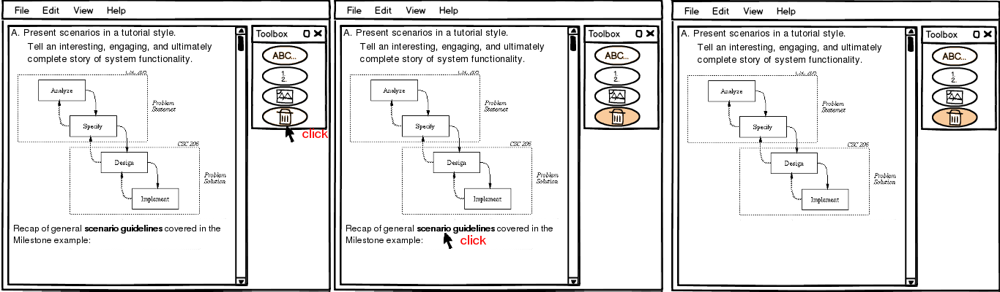
Figure 13: Deleting an element.
Once the lecture has been completed, it is ready to be be slidified. The slidify button brings up the Slidify Dialog where slide boundary elements may be inserted and moved around the document. See the section linked to for information on creating slide boundary elements.
The slidify dialog shows the lecture in a panel where only slide boundaries may be edited. It initially shows whatever slide boundaries are in the document. If the user hasn't added any there are none. If the user has specified slide boundaries in an external html editor or in the slidify dialog previously, the slidify dialog opens the document with the previously specified slide boundaries.
The user may double click on the document to add a new slide boundary, drag a slide boundary to move it around, click on a slide boundary and press the delete button to delete it, or re-slidify the entire presentation by pressing the slidify button.
Figure 14 shows the slidify dialog with a presentation that doesn't have slide boundary elements.
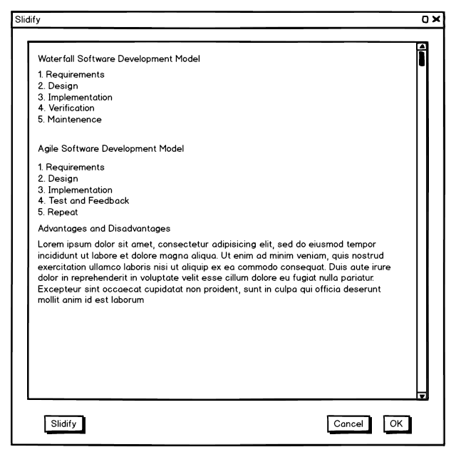
Figure 14: The slidify dialog viewing a presentation with no slide boundary elements.
The slidify button approximates a good place to put slide boundaries and then places them into the document. The slidify button will not change any locked slide boundary elements (see slide boundary elements), but may move around or delete any other existing slide boundaries. Once the user presses the slidify button the panel is arranged with slide boundaries.
Figure 15 shows the presentation slidified with the slidify button.
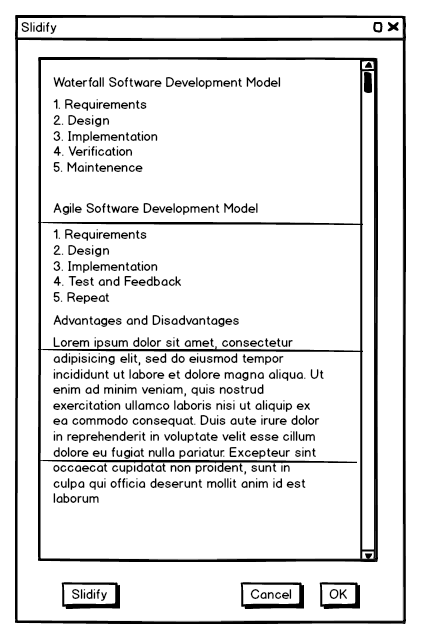
Figure 15: The slidify dialog viewing a presentation with generated slide boundary elements.
The user manually moves, removes, and adds slide boundary elements through the sldify dialog by interacting with the slide boundary markers. To move a slide boundary element, the user simply drags the slide boundary marker up or down. To remove a slide boundary element, the user selects an element and presses the delete button on his keyboard. To add a slide boundary element the user double-clicks where the element should be placed.
Figure 16 shows the slidify dialog after the user has moved around some slide elements. Note: the scrollable icon on the bottom-most slide indicates that this slide will initially have a scroll-bar when it is displayed (because it will not fit in one screen-width).
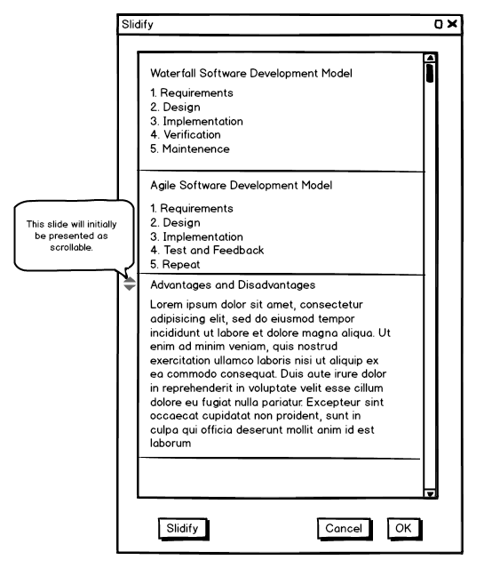
Figure 16: The slidify dialog viewing a presentation with a custom arrangement of slide boundary elements.
When completed, the user may press OK to save the slide boundaries or cancel to disregard them.
{kind=link}